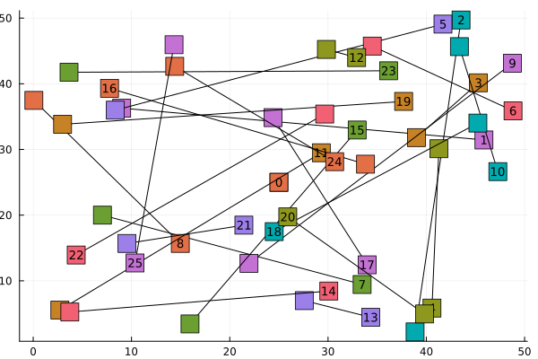

Optimization algorithms
In this section, we describe the various optimization algorithms implemented in this package, and illustrate them on the following small instance, with 25 tasks and 10 scenarios:
using StochasticVehicleScheduling
using Random
Random.seed!(1) # fix the seed for reproducibility
instance = create_random_instance(; nb_tasks=25, nb_scenarios=10)
using Plots
fig = plot()
for i in 1:(get_nb_tasks(instance) + 1)
task = instance.city.tasks[i]
(; start_point, end_point) = task
points = [(start_point.x, start_point.y), (end_point.x, end_point.y)]
plot!(fig, points; color=:black, label="")
scatter!(
fig,
points;
marker=:rect,
markersize=10,
label="",
series_annotations=[("$(i-1)", 9), ""],
)
endqt.qpa.xcb: could not connect to display
qt.qpa.plugin: Could not load the Qt platform plugin "xcb" in "" even though it was found.
This application failed to start because no Qt platform plugin could be initialized. Reinstalling the application may fix this problem.
Available platform plugins are: linuxfb, minimal, offscreen, vnc, xcb.
Aborted (core dumped)
connect: Connection refused
GKS: can't connect to GKS socket application
GKS: Open failed in routine OPEN_WS
GKS: GKS not in proper state. GKS must be either in the state WSOP or WSAC in routine ACTIVATE_WS
Heuristic algorithms
The first category of algorithms implemented are heuristics, which given good but not necessarily optimal solutions in a short amount of time.
Deterministic heuristic
The first heuristic consists in solving a deterministic version of the instance, which minimizes vehicle costs plus travel costs of vehicles:
\[\begin{aligned} \min & \, c_{\text{vehuicle}}\sum_{a\in \delta^+(o)} y_a + c_{\text{delay}}\sum_{a\in a}w_a y_a &\\ s.t. & \sum_{a\in \delta^-(v)} y_a = \sum_{a\in \delta^+(v)} y_a, & \forall v \in\bar V\\ & \sum_{a\in \delta^-(v)} y_a = 1, & \forall v \in\bar V\\ & y_a \in \{0, 1\}, &\forall a\in A \end{aligned}\]
This is a linear flow program very easy to solve:
_, h_solution = solve_deterministic_VSP(instance)
h_value = evaluate_solution(h_solution, instance)
println("Heuristic solution value: $h_value")Heuristic solution value: 7696.754564078043Local search
A more advanced heuristic is the local search, which uses the deterministic solution as an initialization point, and try to improve it by applying elementary modifications to it.
ls_solution = heuristic_solution(instance; nb_it=1_000)
ls_value = evaluate_solution(ls_solution, instance)
println("Local search solution value: $ls_value")Local search solution value: 6810.623923188165We obtain a better solution than the previous heuristic!
Exact algorithms
There are also two exact optimization algorithms implemented in this package.
MIP formulation
One way to solve the stochastic vehicle scheduling problem is to model it as the following linear program with quadratic constraints:
\[\begin{aligned} \min_{d, y} & \,c_{\text{delay}}\dfrac{1}{|S|}\sum\limits_{s\in S}\sum\limits_{v\in V\backslash\{o,d\}} d_v^s + c_{\text{vehicle}} \sum\limits_{a\in\delta^+(o)}y_a\\ \text{s.t.} & \sum_{a\in\delta^-(v)}y_a = \sum_{a\in\delta^+(v)}y_a &\forall v\in \bar V\\ & \sum_{a\in\delta^-(v)}y_a = 1 &\forall v\in \bar V\\ & d_v^s \geq \gamma_v^s + \sum_{\substack{a\in\delta^-(v) \\ a=(u, v)}} (d_u^s - \delta_{u, v}^s) y_a & \forall v\in \bar V, \forall s\in S\\ & d_v^s\geq \gamma_v^s & \forall v\in \bar V, \forall s\in S\\ & y_a\in\{0,1\} & \forall a\in A \end{aligned}\]
Quadratic delay constraints can be linearized using Mc Cormick linearization.
mip_value, mip_solution = solve_scenarios(instance)
println("MIP optimal value: $mip_value")MIP optimal value: 6792.2213746798225The solution value is better than both heuristic values, as expected.
This method does not scale well with tasks and scenarios number.
Column generation formulation
Another option is to use a column generation approach with variables $y_P$ which equals one if route $P\in \mathycal P$ is selected. Cost of a path $P$: $c_P^s = c_{\text{vehicle}} + c_\text{delay}\times \sum_{v\in P} d_v^s$
\[\begin{aligned} \min & \frac{1}{|S|}\sum_{s\in S}\sum_{P\in\mathcal{P}}c_P^s y_P &\\ \text{s.t.} & \sum_{p\ni v} y_P = 1 & \forall v\in \bar V & \quad(\lambda_v\in\mathbb R)\\ & y_P\in\{0,1\} & \forall p\in \mathcal{P} & \end{aligned}\]
The associated sub-problem of the column generation formulation is a constrained shortest path problem of the form :
\[\min_{P\in\mathcal P} (c_P - \sum_{v\in P}\lambda_v)\]
It can be solved using generalized $A^\star$ algorithms (see theoretical details Parmentier 2017 and ConstrainedShortestPath.jl for its Julia implementation).
col_solution = column_generation_algorithm(instance)
col_value = evaluate_solution(col_solution, instance)
println("Column generation optimal value: $col_value")Column generation optimal value: 6792.221374679822The column generation solution has the same value as the MIP one, as expected (both are optimal).
Column generation works better than the direct MIP, but still does not scale well when the number of tasks and scenarios increase too much. One way to do better is to use InferOpt.jl to build and learn an hybrid pipeline containing machine learning and combinatorial optimization layers. Checkout the InferOpt tutorial for an in-depth tutorial.
This page was generated using Literate.jl.